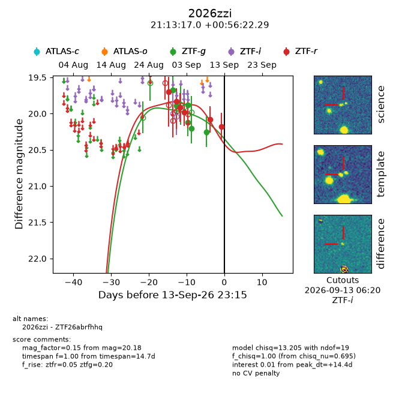
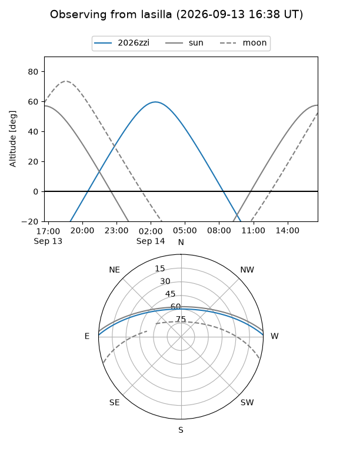
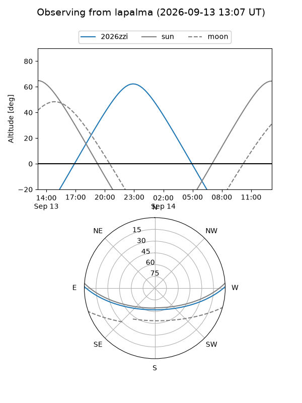
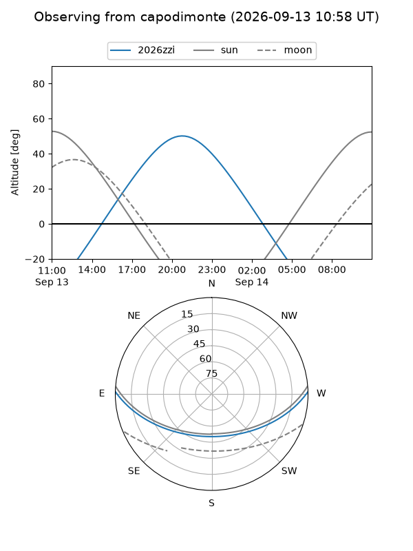
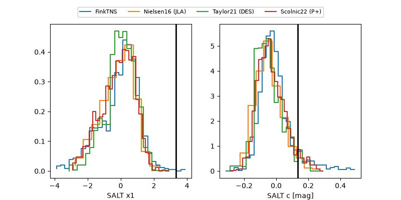

2026zzi
Target 2026zzi at 2026-09-14 11:12
Aliases and brokers:
FINK-ZTF: ztf.fink-portal.org/ZTF26abrfhhq
Lasair-ZTF: lasair-ztf.lsst.ac.uk/objects/ZTF26abrfhhq
ALeRCE-ZTF: alerce.online/object/ZTF26abrfhhq
YSE-PZ: ziggy.ucolick.org/yse/transient_detail/2026zzi
TNS name: wis-tns.org/object/2026zzi
Direct TNS query: direct search
alt names
ZTF26abrfhhq (ztf,fink_ztf)
2026zzi (tns,yse)
Coordinates:
equatorial (ra, dec) = 318.3207,+0.93952
equatorial (HMS+DMS) = 21:13:16.96,+00:56:22.29
galactic (l, b) = (51.8487,-30.58269)
Flags:
TNS type: nan
peak dt: +14.9
Photometry:
last ztfg=20.25, ztfr=20.18
6 ztfg, 6 ztfr detections
Lightcurve

Visibility



Additional plots
